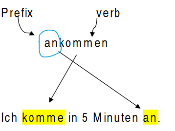
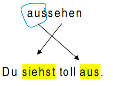

Separable verbs – Trennbare Verben
What is a separable verb?
Some verbs in German have two parts: a prefix added to an infinitive verb in order to change the meaning of the main verb.
'trennbar' adjective comes from the verb 'trennen' in German which means (to separate) because the prefix is separated and goes to the end of the clause or the sentence.
Beispiel (example):
the verb 'kommen' (to come) ...
if we add the prefix 'an', it will change the meaning to 'ankommen' (to arrive).
 (I arrive in 5 minutes)
the verb 'sehen' (to see)...
if we add the prefix 'aus', it will change the meaning to 'aussehen' (to look/ look like).
 (You look great)